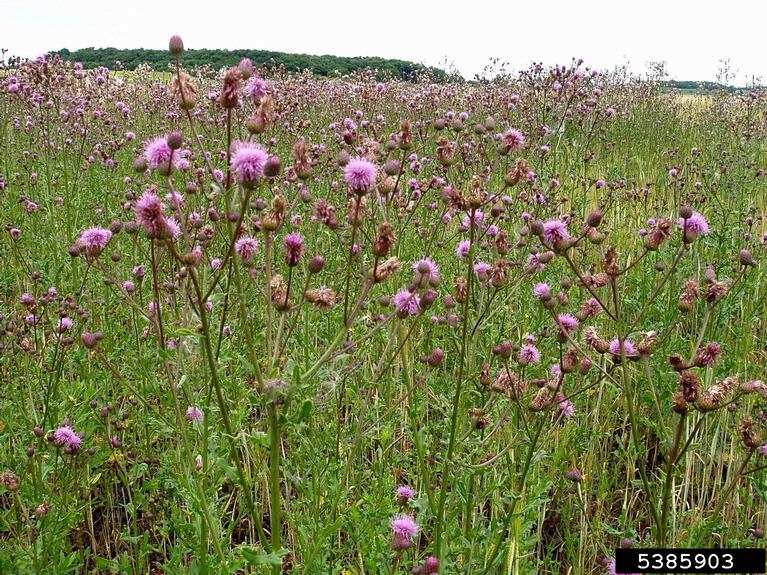

On this website you can get whatever kind of facts that need to be known about the natural things around us. On this particular website we will be giving information about different kinds of weed present in the world. The following are the weeds we will be talking about.
Green Foxtail
Scientific name- Setaria viridis
Green Foxtail is an annual grass weed. It is an ubiquitous weed found in lawns, crop fields, landscapes and even gardens throughout the United States. Green Foxtail grows up to three inches in height with leaves that are half an inch wide. The seed head of this weed appears whip-like, with many small bristles which have dark green tips. It has fibrous roots and a seed head that looks similar to a foxtail, hence the name. The best method of controlling this weed is by hand removal. When you apply herbicides, it can damage useful plants found around the weed which might lead to a loss especially if the weed is found on a farm.
Dodder weed

Scientific name- Cuscuta campestris
Dodder is an annual weed that is difficult to control and that is highly damaging to crops. It is a parasitic plant that likes to grow in moist, wet conditions. Dodders form large colonioes that can wipe out crops such as:
You can control this weed by hand removal and pruning. Large infestations may require other alternatives if you have decided that there is no way you'd like to keep this plant around your yard. But typically removing it and repeated mowing or plant removal in the area can successfully deal with this plant.
Curly Dock
Scientific name- Rumex crispus
Curly dock is a perennial weed that prefers to grow in moistened soils. They grow in pastures, roadsides and crop fields. Curly docks have a membranous sheath and bulging stem joints. These leaves grow two to five feet in length witrh wavy edges. Flowers of curly dock appears in clusters on stalks which develop at the top of the leaves. The best way to control the curly dock is by mowing down the area regularly. Because curly dock is a native plant, controlling by hand digging can be difficult. If not controlled, this weed becomes a menace in the lawn, especially if left to go to seed.
Crabgrass
Scientific name- Digitaria sanguinalis
Crabgrass is an annual weed in the Digitaria family, with over thirty listed species common throughout the country. Crabgrass has smooth stems with circular grooves on them. The leaves are long and thin, resemble blades of grass and have notches at their base where they attach to the stem. The leaves are usually yellowish green to lime green in color, making them reasonably easy to spot. Crabgrass is very difficult to control once it has germinated. The weed thives in moist soil conditions, which causes its seeds to germinate quickly after the surface breaks by cultivation or rainfall. Crabgrass is easy to identify and to pull once it has been located around your garden or yard. Proper mowing also helps to eradicate this weed. In addition, remember not to overwater your lawn as moist conditions are perfect for crabgrass germination.
Clovers
Scientific name- Trifolium repens
Clovers are perennial weeds easily identified by their trifoliate leaves. They flower during late summer and early fall, producing white or pink flowers. Clovers spread quickly and prefer areas with thin or no vegetation cover, such as cultivated fields or abandoned farmlands. They creep along the ground and thrive in nitrogen starved-soils. Identifying this weed on your lawn may indicate poorly supplied nitrogen into the soil. Once established, it is challenging to eliminate, so preventive measurea are best with these types of weeds. Fertilize your to ensure effective eradication. Alternatively, manually uproot the whole plant by hand.
Chickweed
Scientific name- Stellaria media
Chickweed is a low growing winter weed that can establish in cool weather and cause damage to crops early in the growing season. There are two species of chickweed, namely the Common Chickweed and Sticky Chickweed. This weed is also a common problem for landscape and turf grasses. Chickweed germinates when soil temperatures reach between 40 degrees Fahrenheit and 50 degrees Fahrenheit, but growth slows as soil temperatures reach 60 degrees Fahrenheit. It thrives in moist soils and low-fertility environments.
Bindweed
Scientific name- Convolvulus arvenis
Bindweed is a perennial weed identified by its bright green, hairless stems and arrowhead-shaped leaves with scalloped edges. Flowers are white and appear in clusters nears the middle of the plant. Bindweed grows very low and forms dense mats in lawns and pastures. It thrives in poorly drained clay soil often found along fence rows, roadsides and fields with exposed subsoils.
Canadian thistle
Scientific name- Cirsium arvense
Canada thistle is a perennial weed that spreads by seed. It has its origins in Europe but was introduced to America in the 16th Century, among other agricultural shipments. In general, the leaves are lobed and form an arrow-like shape. The stem is prickly and the plant has a very hairy appearance. Seeds are shaped like dandelion seed heads but are more significant. Canada thistle usually appears in open overgrazed areas by livestock or areas tilled repeatedly to cultivate other weeds. You will also find these weeds along river banks, forest openings, roadsides and gardens.
Asiatic Bittersweet

Scientific name- Celastrus orbiculatus
Asiatic bittersweet is a perennial weed that has small, orange berries. Round yellow fruits and red berries can identify it. It is quite invasive and can cause major problems for both homes and garden spaces. Keep in min we are not referring to the American which is native to the United States. The introduced Asiatic Bittersweet is invasive and very difficult to prevent from coming back.